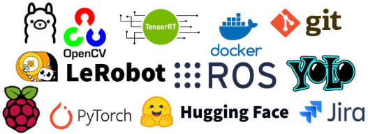
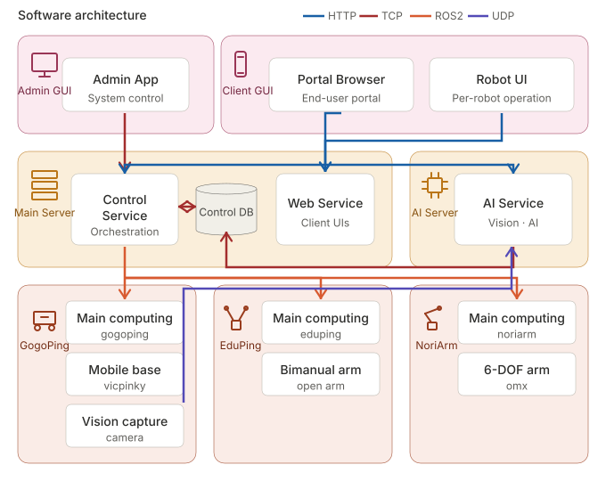
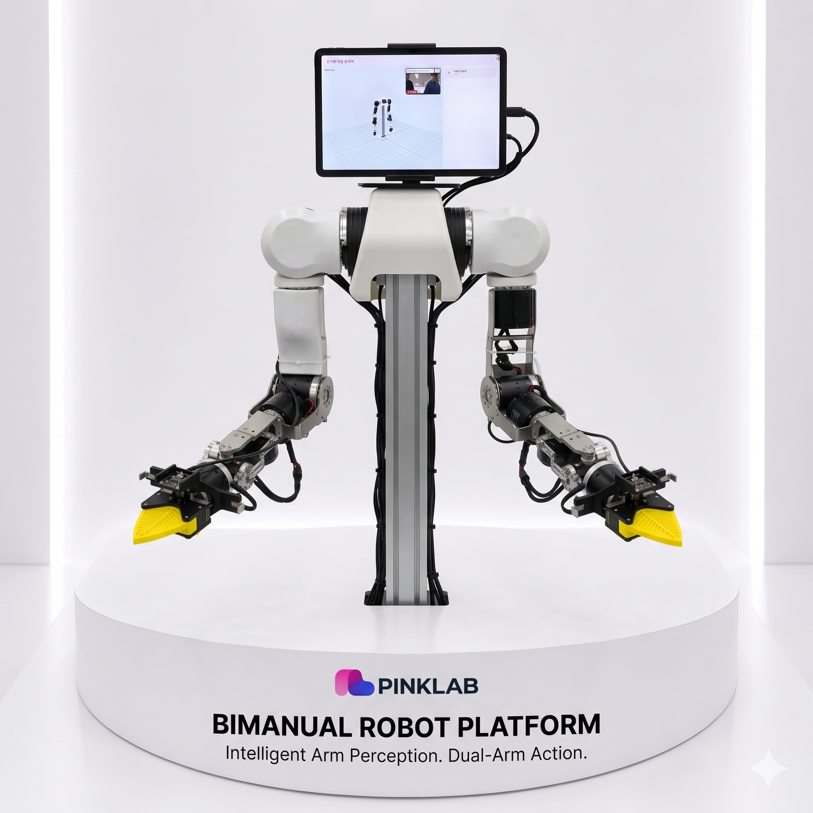
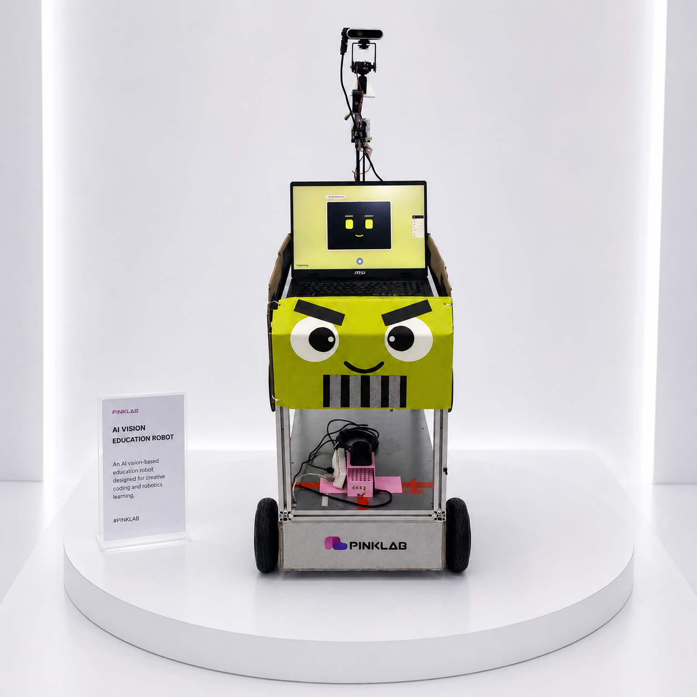
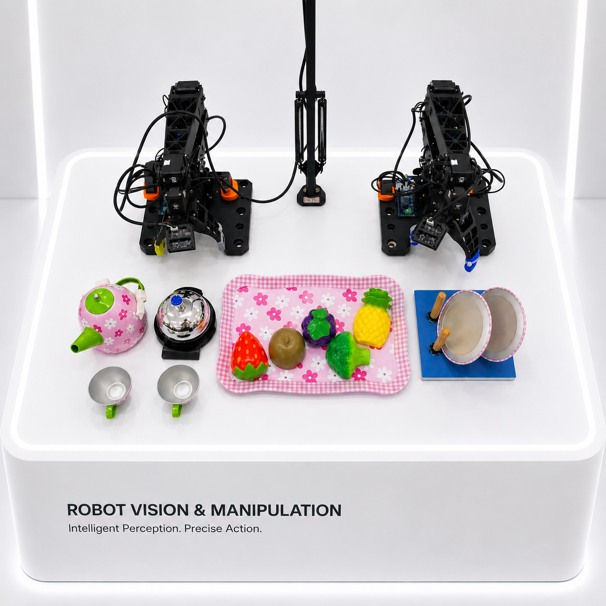
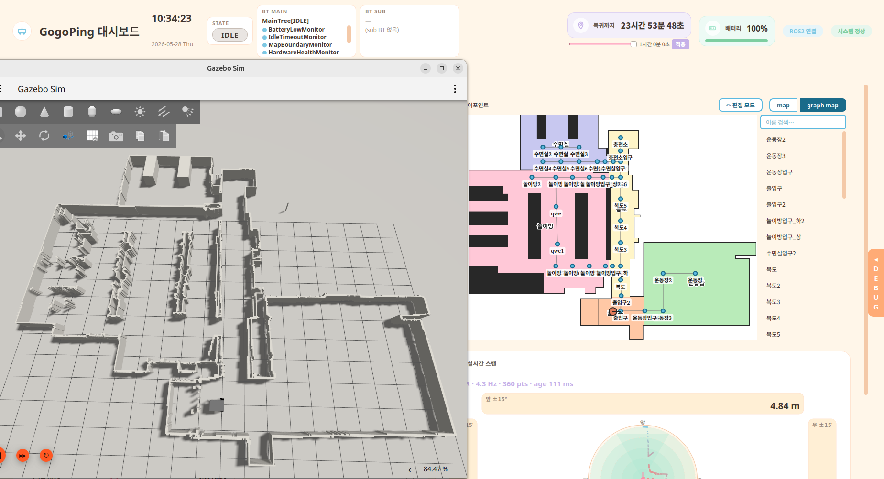

본 프로젝트는 매니퓰레이터·자율주행 로봇과 AI 비전·음성 기술을 융합하여, 유치원에서 아이와 놀아주고 교사의 놀이·운반·기록 업무를 분담하는 교육보조로봇 서비스 pingdergarten을 구현한다.
등원부터 하원까지 EduPing·GogoPing·NoriArm 3종 로봇이 하루 일과를 함께하며, 아이에게는 즐거운 놀이를, 교사에게는 업무 여유를 동시에 제공한다.





